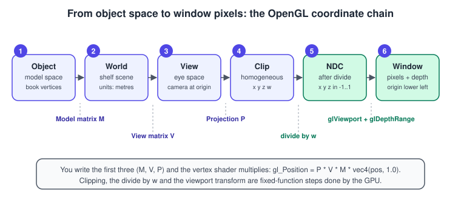
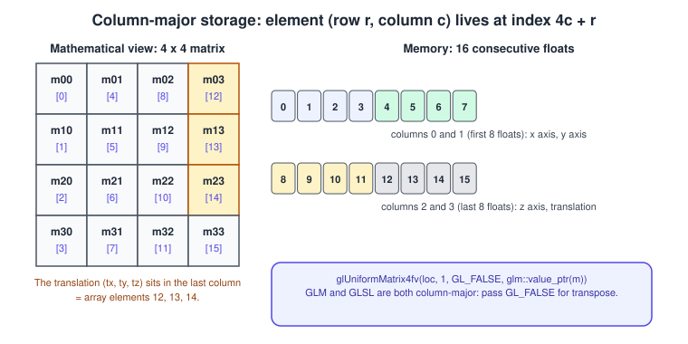
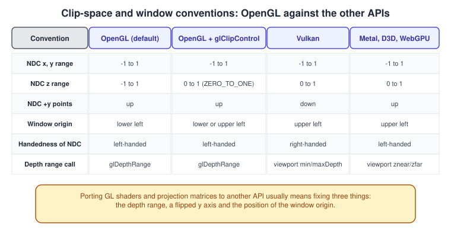
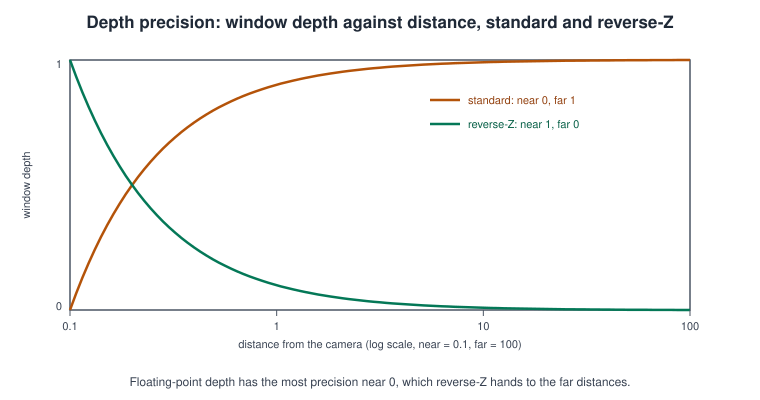
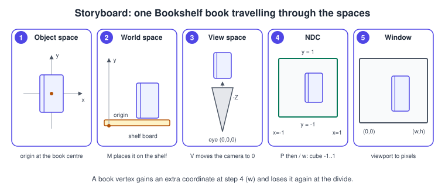

Coordinate Systems and Transforms in OpenGL
|
This content was generated with the assistance of AI and should be verified against the official documentation before being relied on in production. |
Every vertex that OpenGL draws travels through a fixed sequence of coordinate systems, and the vertex shader you write performs
the part that you control: three matrices that take a position from the book’s own coordinates to clip space. Everything after
that, the perspective divide and the mapping to pixels and depth values, is fixed-function and configured by two calls,
glViewport and glDepthRange (or glClipControl on newer contexts). This page follows one vertex of the Bookshelf book from
object space to a pixel, defines each space with the exact conventions of OpenGL, explains the column-major storage that
confuses most newcomers, and finishes with a complete C++20 program that spins the book with GLM matrices.
The facts were checked in November 2026. The versions documented are OpenGL 4.6 core (4.1 as the macOS ceiling, which the program
targets), OpenGL ES 3.2 where it differs, and GLM for the maths. glClipControl needs OpenGL 4.5 (or GL_ARB_clip_control) and
is not available on macOS; on OpenGL ES the equivalent is the extension GL_EXT_clip_control. For the mathematics that is
common to all APIs see Coordinate Spaces and Transforms and
Vectors, Matrices and Homogeneous Coordinates; rotations
in depth are in Rotations and Quaternions. The camera side (lookAt, field of
view, the orbit camera) is in Cameras and Projection.
The chain from object space to window

-
Object space (also model or local space): the coordinates stored in the vertex buffer. The Bookshelf book is a box whose centre is the origin.
-
World space: the shared space of the scene. The model matrix \( M \) places the book on the shelf.
-
View space (also eye or camera space): the world as seen from the camera, which sits at the origin and looks down the negative Z axis. The view matrix \( V \) is the inverse of the camera’s own placement.
-
Clip space: homogeneous coordinates \( (x, y, z, w) \) produced by the projection matrix \( P \). The vertex shader writes them to the built-in
gl_Position. A point is inside the view volume when \( -w \le x, y, z \le w \). -
Normalised device coordinates (NDC): the result of dividing by \( w \). The visible volume becomes the cube from \( -1 \) to \( 1 \) on every axis.
-
Window coordinates: pixels and a depth value, produced by the viewport and depth-range transform.
The whole shader-side chain for one vertex is
\[ \mathbf{p}_{clip} = P \, V \, M \, \mathbf{p}_{object} \]
with all four operands in homogeneous form, \( \mathbf{p}_{object} = (x, y, z, 1)^T \). Matrices are applied right to left: the vector is multiplied by \( M \) first. OpenGL has used column vectors from the start, and so does GLM, which is why the product reads \( P V M \) and not \( M V P \).
Why the chain is split in three
You could multiply one matrix per object on the CPU and send a single uMvp uniform, and the example below does exactly that.
The three-way split exists because the three matrices change at different rates:
-
\( M \) changes per object per frame (the book rotates).
-
\( V \) changes per camera per frame (the orbit camera moves).
-
\( P \) changes only when the window is resized or the field of view changes.
Lighting needs the intermediate spaces too: a Blinn-Phong shader computes light and view vectors in view or world space, so it needs \( M \) (or \( V M \)) separately. See Lighting: Blinn-Phong.
Column-major storage
OpenGL and GLSL store matrices in column-major order: the 16 floats of a mat4 are column 0, then column 1, column 2 and
column 3. GLM follows the same rule, so a glm::mat4 can be passed to OpenGL without any conversion.

The element at row \( r \) and column \( c \) is at index \( 4c + r \). The translation \( (t_x, t_y, t_z) \) of a transformation
matrix sits in the last column, so it occupies array elements 12, 13 and 14. In GLM the same element is written m[col][row]:
m[3] is the fourth column, m[3][0] is \( t_x \). That m[a][b] means "column a, row b" is the second most common source of
confusion, after the next one.
Uploading matrices
#include <glm/glm.hpp>
#include <glm/gtc/matrix_transform.hpp>
#include <glm/gtc/type_ptr.hpp>
// A translation by (2, 3, 4): the last column of the matrix holds the offset.
glm::mat4 t = glm::translate(glm::mat4(1.0f), glm::vec3(2.0f, 3.0f, 4.0f));
const float* a = glm::value_ptr(t);
// a[12] == 2, a[13] == 3, a[14] == 4
// GLM and GLSL are both column-major, so no transpose is needed.
glUniformMatrix4fv(location, 1, GL_FALSE, glm::value_ptr(t));Source: OpenGL 4 reference: glUniform.
The third argument of glUniformMatrix4fv is transpose. Pass GL_FALSE when the data is column-major, which is the case for
GLM, for matrices you write by hand as float m[16] in column order and for the output of the Android helper class
android.opengl.Matrix. In OpenGL ES 2.0 passing GL_TRUE is an error; the parameter exists in OpenGL ES 3.0 and later. Another
reason to leave it GL_FALSE: the GPU would have to transpose every upload.
In GLSL, m[1] is column 1 and m[1][2] is element row 2 of that column, the same convention. The multiplication M * v treats
v as a column vector. Reversing the order, v * M, treats it as a row vector and multiplies by the transpose; it is occasionally
used on purpose and is a bug otherwise.
Building the model matrix
A model matrix is a product of translation \( T \), rotation \( R \) and scale \( S \), in the order \( T R S \): scale first, then rotate about the object’s origin, then move.
\[ T = \begin{pmatrix} 1 & 0 & 0 & t_x \\ 0 & 1 & 0 & t_y \\ 0 & 0 & 1 & t_z \\ 0 & 0 & 0 & 1 \end{pmatrix}, \quad S = \begin{pmatrix} s_x & 0 & 0 & 0 \\ 0 & s_y & 0 & 0 \\ 0 & 0 & s_z & 0 \\ 0 & 0 & 0 & 1 \end{pmatrix}, \quad R_y(\alpha) = \begin{pmatrix} \cos\alpha & 0 & \sin\alpha & 0 \\ 0 & 1 & 0 & 0 \\ -\sin\alpha & 0 & \cos\alpha & 0 \\ 0 & 0 & 0 & 1 \end{pmatrix} \]
In code, the matrix is built by multiplying from the left, so the line that reads first applies last:
// Bookshelf book: 0.60 wide, 0.90 tall, 0.18 thick; a unit cube scaled to that size.
glm::mat4 bookModel(float angleRadians, const glm::vec3& position) {
glm::mat4 m(1.0f);
m = glm::translate(m, position); // applied last
m = glm::rotate(m, angleRadians, glm::vec3(0.0f, 1.0f, 0.0f)); // applied second
m = glm::scale(m, glm::vec3(0.60f, 0.90f, 0.18f)); // applied first
return m;
}Source: OpenGL 4 reference: glUniform (matrix upload) and GLM for the matrix functions.
Swapping the order produces a different, often surprising, result: rotating after translating swings the book around the world origin instead of spinning it in place. A non-uniform scale after a rotation shears the object. When normals are transformed for lighting, the matrix to use is the inverse transpose of the upper-left 3 by 3 block of \( M \), not \( M \) itself; the lighting page explains why.
GLM angles are in radians (recent releases make this the default; define GLM_FORCE_RADIANS in older ones), so convert degrees with
glm::radians.
The view matrix
The view matrix is the inverse of the transform that places the camera in the world. glm::lookAt(eye, target, up) builds it
directly from a camera position, the point it looks at and an up direction; the maths and an orbit camera are in
Cameras and Projection. After \( V \) the camera is at the origin
looking along \( -Z \), with \( +X \) to the right and \( +Y \) up: view space is right-handed.
The projection matrix
The projection matrix maps the view frustum to the clip-space volume. For a symmetric perspective frustum with vertical field of view \( \theta \), aspect ratio \( a \) (width over height), near distance \( n \) and far distance \( f \), the OpenGL matrix is
\[ P = \begin{pmatrix} \frac{1}{a \tan(\theta/2)} & 0 & 0 & 0 \\ 0 & \frac{1}{\tan(\theta/2)} & 0 & 0 \\ 0 & 0 & \frac{f + n}{n - f} & \frac{2 f n}{n - f} \\ 0 & 0 & -1 & 0 \end{pmatrix} \]
The bottom row \( (0, 0, -1, 0) \) copies the negated view-space \( z \) into \( w \): for a point at distance \( d \) in front of the camera, \( w = d \). That is what makes the later division a perspective division. The third row maps view-space depth into \( z_{clip} \), and after the division the NDC depth of a point at distance \( d \) is
\[ z_{ndc} = \frac{f + n}{f - n} - \frac{2 f n}{(f - n)\, d} \]
which is \( -1 \) at \( d = n \) and \( +1 \) at \( d = f \). The orthographic matrix, used for 2D, shadow maps and technical views, has \( w = 1 \) for every point and the form
\[ O = \begin{pmatrix} \frac{2}{r - l} & 0 & 0 & -\frac{r + l}{r - l} \\ 0 & \frac{2}{t - b} & 0 & -\frac{t + b}{t - b} \\ 0 & 0 & -\frac{2}{f - n} & -\frac{f + n}{f - n} \\ 0 & 0 & 0 & 1 \end{pmatrix} \]
for a box with left, right, bottom, top, near and far planes. GLM builds them with glm::perspective(fovy, aspect, n, f) and
glm::ortho(l, r, b, t, n, f), both of which target the OpenGL convention of depth \( -1 \) to \( 1 \) unless a configuration macro
says otherwise (see below).
Clipping, the perspective divide and NDC
The vertex shader output \( (x_c, y_c, z_c, w_c) \) is clipped against the view volume: a primitive is cut so that every remaining point satisfies \( -w_c \le x_c, y_c, z_c \le w_c \). Clipping happens in clip space, before the divide, because dividing a point with \( w \le 0 \) (behind the camera) would produce garbage. The surviving points are divided:
\[ (x_{ndc}, y_{ndc}, z_{ndc}) = \left( \frac{x_c}{w_c}, \frac{y_c}{w_c}, \frac{z_c}{w_c} \right) \]
This is the perspective divide; it is where far objects get smaller. All other vertex attributes are interpolated across the
triangle perspective-correctly, using the \( 1/w \) of each vertex, unless the fragment input is declared noperspective.
The details are in The OpenGL Rendering Pipeline.
The viewport and depth-range transform
NDC is resolution-independent. The last transform maps it to the framebuffer. With glViewport(x0, y0, w, h) and
glDepthRange(n, f) (the depth-range values, not the projection planes), the window coordinates are
\[ x_w = \frac{w}{2}\,(x_{ndc} + 1) + x_0, \qquad y_w = \frac{h}{2}\,(y_{ndc} + 1) + y_0, \qquad z_w = \frac{f - n}{2}\, z_{ndc} + \frac{n + f}{2} \]
With the default depth range \( [0, 1] \) the depth written to the depth buffer is \( z_w = (z_{ndc} + 1)/2 \). The window origin is the lower-left corner and \( y \) grows upwards, unlike Vulkan, Metal, Direct3D and the web, which put the origin at the upper left.
// On resize, use the framebuffer size in pixels, not the window size in screen coordinates.
glfwSetFramebufferSizeCallback(window, [](GLFWwindow*, int width, int height) {
glViewport(0, 0, width, height);
});Source: OpenGL 4 reference: glViewport and glDepthRange.
On a high-DPI display the framebuffer has more pixels than the window has screen coordinates, so glfwGetWindowSize gives the wrong
number to glViewport and the picture fills a quarter of the window. Always use the framebuffer size, and recompute the
projection’s aspect ratio from it. glViewport also accepts an offset, which is how split screen and render-to-texture sub-rectangles
are drawn; it is clamped to GL_MAX_VIEWPORT_DIMS. A scissor rectangle (glScissor) is separate: it discards fragments, the viewport
scales the image.
The conventions of other APIs

When a shader or a matrix library from another API is reused, three things change: the depth range \( 0 \) to \( 1 \) instead of \( -1 \) to \( 1 \), the direction of NDC \( y \), and the window origin. The porting consequences are discussed in Porting to Vulkan, Metal and WebGPU. The same pitfalls exist when rendering into a texture in OpenGL and sampling it with image coordinates that start at the top: the image looks upside down. The cure is to flip \( v \) or the projection, not to flip the data.
Depth precision, glClipControl and reverse-Z
The depth value is not linear in distance. From the formula above, the NDC depth of a point at distance \( d \) behaves like \( -1/d \): most of the depth range is used up close to the camera.

With a near plane of 0.1 and a far plane of 100, a point only one metre away already has a window depth of about 0.90: the remaining 99 metres share the last 10 percent of the range. A fixed-point 24-bit depth buffer then cannot tell apart surfaces a few centimetres apart at distance, and the result is z-fighting.
The standard remedies are to push the near plane out (a near of 0.1 instead of 0.01 gives ten times more precision at distance), to use a 32-bit floating-point depth buffer, and reverse-Z. Reverse-Z maps the near plane to depth 1 and the far plane to depth 0. A floating-point number has the most precision close to zero, so this gives the far distances, where the standard mapping is worst, the finest steps, and the two non-uniformities largely cancel. The recipe has four parts:
-
Use a depth-range \( [0, 1] \) clip space, selected with
glClipControl(GL_LOWER_LEFT, GL_ZERO_TO_ONE)(OpenGL 4.5,GL_ARB_clip_control;GL_EXT_clip_controlon OpenGL ES). -
Build the projection with the near and far arguments swapped:
glm::perspectiveRH_ZO(fovy, aspect, far, near). -
Clear the depth buffer to 0 and test with
GL_GREATER(orGL_GEQUAL). -
Use a floating-point depth attachment,
GL_DEPTH_COMPONENT32F, in a framebuffer object; see Framebuffers and Render to Texture.
Reverse-Z does not help with the default \( -1 \) to \( 1 \) clip space. There the depth is first stored as a float in
\( [-1, 1] \), where the resolution is highest near zero (the middle of the range) and then mapped to \( [0, 1] \), which wastes the
benefit: step 1 is not optional. On macOS and on OpenGL ES without the extension glClipControl does not exist, and reverse-Z is
not available.
// Reverse-Z depth set-up for a context that exposes OpenGL 4.5 (check GLAD_GL_VERSION_4_5 first).
void setDepthMode(bool reverseZ) {
if (reverseZ) {
glClipControl(GL_LOWER_LEFT, GL_ZERO_TO_ONE);
glClearDepth(0.0);
glDepthFunc(GL_GREATER);
} else {
glClipControl(GL_LOWER_LEFT, GL_NEGATIVE_ONE_TO_ONE);
glClearDepth(1.0);
glDepthFunc(GL_LESS);
}
}
glm::mat4 makeProjection(bool reverseZ, float fovy, float aspect, float zNear, float zFar) {
return reverseZ ? glm::perspectiveRH_ZO(fovy, aspect, zFar, zNear) // near -> 1, far -> 0
: glm::perspectiveRH_NO(fovy, aspect, zNear, zFar); // near -> -1, far -> 1
}Source: OpenGL 4 reference: glClipControl.
With reverse-Z the far plane can also be pushed to infinity: the matrix then needs no far parameter and nothing at distance is
clipped by the far plane. The glClipControl call also accepts GL_UPPER_LEFT, which moves the window origin to the top left so
that an OpenGL renderer can match the Vulkan and Direct3D image orientation. Be aware that this can change which faces count as
front-facing, so check face culling and glFrontFace after switching the origin.
Storyboard: one vertex of the book

Follow one corner of the book through the numbered panels. In object space the corner is \( (0.5, 0.5, 0.5) \) of the unit cube. \( M \) scales it to a 0.6 by 0.9 by 0.18 box and moves it onto the shelf. \( V \) re-expresses it relative to the camera, so a corner 2.5 units in front of the camera has \( z = -2.5 \) in view space. \( P \) produces clip coordinates whose \( w \) is the distance, 2.5. The divide gives NDC coordinates between \( -1 \) and \( 1 \), and the viewport transform multiplies by half the framebuffer size to get pixels.
A complete program: the rotating book box
This is Bookshelf GL step 3 without lighting (lighting comes in
Lighting: Blinn-Phong): a box with the proportions of the book, rotating
about its vertical axis, seen by a perspective camera, with depth testing and back-face culling. Press R to toggle reverse-Z when
the context offers OpenGL 4.5. The vertex colour is derived from the position so that the faces are distinguishable without textures,
which come in Textures and Samplers.
cmake_minimum_required(VERSION 3.20)
project(bookshelf_gl_transforms CXX)
set(CMAKE_CXX_STANDARD 20)
set(CMAKE_CXX_STANDARD_REQUIRED ON)
find_package(glfw3 CONFIG REQUIRED)
find_package(glm CONFIG REQUIRED)
# glad2 generated with: --api gl:core=4.6 (the 4.5 entry points compile; the code checks at run time)
add_subdirectory(external/glad/cmake)
glad_add_library(glad REPRODUCIBLE API gl:core=4.6)
add_executable(transforms main.cpp)
target_link_libraries(transforms PRIVATE glfw glm::glm glad)Source: GLFW: Building applications and glad2 generator. The full project set-up is in Getting Started on the Desktop; for CMake and vcpkg see C++ Build and Tooling.
// main.cpp: the Bookshelf book as a rotating box with a model-view-projection matrix.
#include <glad/gl.h>
#include <GLFW/glfw3.h>
#include <glm/glm.hpp>
#include <glm/gtc/matrix_transform.hpp>
#include <glm/gtc/type_ptr.hpp>
#include <array>
#include <cstdint>
#include <cstdio>
#include <cstdlib>
static const char* kVertexShader = R"GLSL(#version 410 core
layout(location = 0) in vec3 aPos;
uniform mat4 uMvp;
out vec3 vColor;
void main() {
vColor = aPos + 0.5; // unit cube corners map to 0..1: a colour per corner
gl_Position = uMvp * vec4(aPos, 1.0);
}
)GLSL";
static const char* kFragmentShader = R"GLSL(#version 410 core
in vec3 vColor;
out vec4 fragColor;
void main() { fragColor = vec4(vColor, 1.0); }
)GLSL";
static GLuint makeShader(GLenum stage, const char* source) {
GLuint s = glCreateShader(stage);
glShaderSource(s, 1, &source, nullptr);
glCompileShader(s);
GLint ok = GL_FALSE;
glGetShaderiv(s, GL_COMPILE_STATUS, &ok);
if (!ok) {
char log[1024];
glGetShaderInfoLog(s, sizeof(log), nullptr, log);
std::fprintf(stderr, "shader error: %s\n", log);
std::exit(1);
}
return s;
}
static GLuint makeProgram() {
GLuint vs = makeShader(GL_VERTEX_SHADER, kVertexShader);
GLuint fs = makeShader(GL_FRAGMENT_SHADER, kFragmentShader);
GLuint p = glCreateProgram();
glAttachShader(p, vs);
glAttachShader(p, fs);
glLinkProgram(p);
GLint ok = GL_FALSE;
glGetProgramiv(p, GL_LINK_STATUS, &ok);
if (!ok) {
char log[1024];
glGetProgramInfoLog(p, sizeof(log), nullptr, log);
std::fprintf(stderr, "link error: %s\n", log);
std::exit(1);
}
glDeleteShader(vs);
glDeleteShader(fs);
return p;
}
static void setDepthMode(bool reverseZ) {
if (reverseZ) {
glClipControl(GL_LOWER_LEFT, GL_ZERO_TO_ONE);
glClearDepth(0.0);
glDepthFunc(GL_GREATER);
} else {
glClipControl(GL_LOWER_LEFT, GL_NEGATIVE_ONE_TO_ONE);
glClearDepth(1.0);
glDepthFunc(GL_LESS);
}
}
int main() {
if (!glfwInit()) return 1;
glfwWindowHint(GLFW_CONTEXT_VERSION_MAJOR, 4);
glfwWindowHint(GLFW_CONTEXT_VERSION_MINOR, 1);
glfwWindowHint(GLFW_OPENGL_PROFILE, GLFW_OPENGL_CORE_PROFILE);
glfwWindowHint(GLFW_OPENGL_FORWARD_COMPAT, GLFW_TRUE);
GLFWwindow* window = glfwCreateWindow(960, 600, "Bookshelf GL: transforms", nullptr, nullptr);
if (!window) { glfwTerminate(); return 1; }
glfwMakeContextCurrent(window);
if (!gladLoadGL(glfwGetProcAddress)) return 1;
glfwSwapInterval(1);
const bool canClipControl = GLAD_GL_VERSION_4_5 != 0;
bool reverseZ = false;
bool rWasDown = false;
// Unit cube, 8 corners, 12 triangles, counter-clockwise when seen from outside.
const std::array<float, 24> corners = {
-0.5f, -0.5f, 0.5f, 0.5f, -0.5f, 0.5f, 0.5f, 0.5f, 0.5f, -0.5f, 0.5f, 0.5f,
-0.5f, -0.5f, -0.5f, 0.5f, -0.5f, -0.5f, 0.5f, 0.5f, -0.5f, -0.5f, 0.5f, -0.5f};
const std::array<std::uint8_t, 36> indices = {
0, 1, 2, 0, 2, 3, // front (+z)
5, 4, 7, 5, 7, 6, // back (-z)
1, 5, 6, 1, 6, 2, // right (+x)
4, 0, 3, 4, 3, 7, // left (-x)
3, 2, 6, 3, 6, 7, // top (+y)
4, 5, 1, 4, 1, 0}; // bottom (-y)
GLuint vao = 0, vbo = 0, ebo = 0;
glGenVertexArrays(1, &vao);
glGenBuffers(1, &vbo);
glGenBuffers(1, &ebo);
glBindVertexArray(vao);
glBindBuffer(GL_ARRAY_BUFFER, vbo);
glBufferData(GL_ARRAY_BUFFER, sizeof(corners), corners.data(), GL_STATIC_DRAW);
glBindBuffer(GL_ELEMENT_ARRAY_BUFFER, ebo);
glBufferData(GL_ELEMENT_ARRAY_BUFFER, sizeof(indices), indices.data(), GL_STATIC_DRAW);
glVertexAttribPointer(0, 3, GL_FLOAT, GL_FALSE, 3 * sizeof(float), nullptr);
glEnableVertexAttribArray(0);
const GLuint program = makeProgram();
const GLint mvpLocation = glGetUniformLocation(program, "uMvp");
glEnable(GL_DEPTH_TEST);
glEnable(GL_CULL_FACE); // back faces are those with clockwise winding
glFrontFace(GL_CCW);
setDepthMode(false);
while (!glfwWindowShouldClose(window)) {
// Toggle reverse-Z on the rising edge of R.
const bool rDown = glfwGetKey(window, GLFW_KEY_R) == GLFW_PRESS;
if (rDown && !rWasDown) {
if (canClipControl) {
reverseZ = !reverseZ;
setDepthMode(reverseZ);
std::printf("reverse-Z %s\n", reverseZ ? "on" : "off");
} else {
std::printf("glClipControl needs OpenGL 4.5: not available here\n");
}
}
rWasDown = rDown;
int width = 0, height = 0;
glfwGetFramebufferSize(window, &width, &height);
if (width == 0 || height == 0) { glfwPollEvents(); continue; } // minimised
glViewport(0, 0, width, height);
const float aspect = static_cast<float>(width) / static_cast<float>(height);
const float t = static_cast<float>(glfwGetTime());
glm::mat4 model(1.0f);
model = glm::rotate(model, t, glm::vec3(0.0f, 1.0f, 0.0f));
model = glm::scale(model, glm::vec3(0.60f, 0.90f, 0.18f));
const glm::mat4 view = glm::lookAt(glm::vec3(0.0f, 0.6f, 2.5f), // eye
glm::vec3(0.0f, 0.0f, 0.0f), // target
glm::vec3(0.0f, 1.0f, 0.0f)); // up
const float fovy = glm::radians(45.0f);
const glm::mat4 proj = reverseZ ? glm::perspectiveRH_ZO(fovy, aspect, 50.0f, 0.1f)
: glm::perspectiveRH_NO(fovy, aspect, 0.1f, 50.0f);
const glm::mat4 mvp = proj * view * model;
glClearColor(0.10f, 0.11f, 0.15f, 1.0f);
glClear(GL_COLOR_BUFFER_BIT | GL_DEPTH_BUFFER_BIT);
glUseProgram(program);
glUniformMatrix4fv(mvpLocation, 1, GL_FALSE, glm::value_ptr(mvp));
glBindVertexArray(vao);
glDrawElements(GL_TRIANGLES, 36, GL_UNSIGNED_BYTE, nullptr);
glfwSwapBuffers(window);
glfwPollEvents();
}
glDeleteProgram(program);
glfwDestroyWindow(window);
glfwTerminate();
return 0;
}Source: OpenGL 4 reference: glDrawElements, glFrontFace and glDepthFunc.
Notes on the program:
-
The depth-mode switch only changes the order of the depth test. Real precision gains need a float depth attachment, which the default framebuffer does not guarantee.
-
A cube needs only 8 positions here because the colour is computed from the position; a lit cube needs 24 vertices, one per corner per face, since the normals differ (see Meshes and Vertex Data).
-
If the window shows a black screen, the first checks are the winding order and culling (swap
GL_CCWforGL_CW), the depth function and the clear value, thenglGetErrorand the debug callback of Debugging and Tools.
Placing many books on the shelf
A later Bookshelf GL step lays the books along a shelf. Only the model matrices differ, so a loop is enough; the instanced version that draws them in one call is in Instancing and Indirect Drawing.
#include <glm/glm.hpp>
#include <glm/gtc/matrix_transform.hpp>
#include <vector>
// Nine books standing on a shelf board at height shelfY, left to right, with a little random lean.
std::vector<glm::mat4> shelfModels(float shelfY, int count = 9) {
std::vector<glm::mat4> models;
models.reserve(static_cast<size_t>(count));
const float spacing = 0.22f;
const float startX = -0.5f * spacing * static_cast<float>(count - 1);
for (int i = 0; i < count; ++i) {
const float lean = glm::radians(((i * 37) % 7 - 3) * 1.5f); // deterministic variation
glm::mat4 m(1.0f);
m = glm::translate(m, glm::vec3(startX + spacing * static_cast<float>(i), shelfY + 0.45f, 0.0f));
m = glm::rotate(m, lean, glm::vec3(0.0f, 0.0f, 1.0f));
m = glm::scale(m, glm::vec3(0.18f, 0.90f, 0.60f)); // spine facing the viewer
models.push_back(m);
}
return models;
}Source: GLM: OpenGL Mathematics.
Common mistakes
-
Wrong multiplication order.
model * view * projinstead ofproj * view * modelcollapses the picture or flips it. In GLSL writeuMvp * vec4(aPos, 1.0), with the matrix on the left. -
Transposing by accident. Passing
GL_TRUEfor a GLM matrix, or building a matrix row by row into afloat[16]. Symptom: a rotation looks like a shear, or the translation disappears. -
wforgotten. A direction (a normal, a light vector) hasw = 0so the translation does not move it. A position hasw = 1. -
Using the window size for the viewport. Wrong by a factor of two on retina and many Android displays; use the framebuffer size.
-
Aspect ratio not updated. The book looks stretched after a resize because \( P \) still uses the old aspect. The cure is in Cameras and Projection.
-
Near plane at or below zero. \( n = 0 \) makes the projection singular and \( n < 0 \) is invalid; use 0.1 or larger and raise it if z-fighting appears.
-
GLM_FORCE_DEPTH_ZERO_TO_ONEwithoutglClipControl. The macro changesglm::perspectiveto the 0 to 1 depth range. The default OpenGL clip volume is \( -1 \) to \( 1 \), so the near half of the depth range is clipped away. -
Negative scale and culling. A mirroring matrix reverses the winding, so the object disappears with back-face culling on. Flip
glFrontFacefor those draws. -
Large worlds. A 32-bit float has about 24 bits of significand: at 10 kilometres from the origin the spacing between values is about a millimetre, so geometry jitters. Render relative to the camera (subtract the camera position in double precision on the CPU) or keep the world small.
Performance notes
-
Multiply the three matrices once per object on the CPU and upload a single
mat4, or upload \( P V \) once per frame and \( M \) per object, instead of multiplying three matrices per vertex in the shader. Lighting that needs separate matrices can use uniform blocks; see Uniforms, UBOs and SSBOs. -
Per-frame data (camera matrices) belongs in one uniform buffer bound to all programs; per-object matrices belong in an instance buffer or a shader storage buffer when there are many objects.
-
The perspective divide and clipping are free of charge on the GPU. What costs is overdraw, which a good front-to-back draw order and early depth testing reduce, as discussed in Performance and Profiling and Performance.
Where older guides are outdated
| Older material | What it teaches | Current practice |
|---|---|---|
OpenGL SuperBible, 4th edition (2007), Chapter 4 |
The matrix stack: |
All of these were removed from the core profile in OpenGL 3.1 and 3.2 (2009) and are absent from core contexts on macOS. Build the matrices with GLM and upload them as uniforms. |
OpenGL ES 2.0 Programming Guide (2008) and OpenGL ES 3.0 Programming Guide (2014), Chapter 8 |
Transform maths implemented in the companion sample code with the books' own small matrix helpers and conventions. |
GLM, or |
OpenGL ES 2 for Android (2013) |
|
The same helper class still exists; use the framebuffer size and rebuild the projection on resize. |
Course notes that use |
Fixed-function projection set-up with |
A matrix uniform computed on the CPU. |
Any guide that stops at depth range \( -1 \) to \( 1 \) |
The only clip-space convention. |
|
Recent changes
-
OpenGL 4.5 (2014) added
glClipControl, which OpenGL 4.6 (2017) keeps in core; it gives OpenGL the depth-range and origin conventions of the other APIs. On OpenGL ES the extensionGL_EXT_clip_controloffers the same. -
OpenGL 4.6 is the last desktop version; the specification revision is dated 5 May 2022.
-
Current GLM releases take angles in radians by default; older ones need
GLM_FORCE_RADIANS.
References
-
OpenGL 4 reference: glViewport, glDepthRange and glClipControl
-
OpenGL 4 reference: glUniform (matrix variants)
-
OpenGL 4.6 core specification, chapter 13 (fixed-function vertex post-processing)
-
OpenGL Wiki: Vertex Post-Processing and Depth Buffer Precision
-
OpenGL SuperBible, 4th edition (publisher page) and OpenGL ES 3.0 Programming Guide (publisher page)